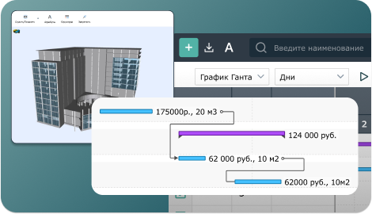
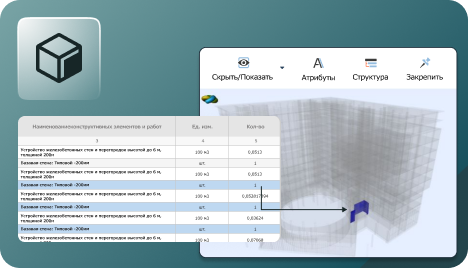
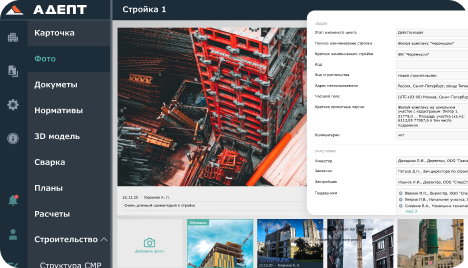
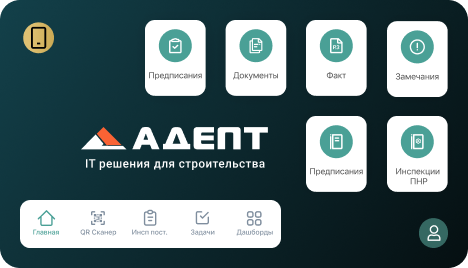
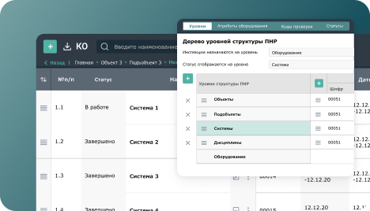
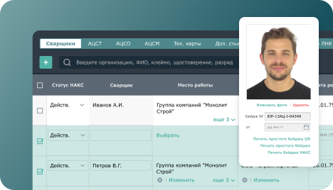
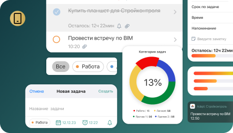
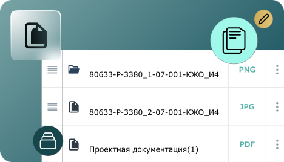

ADEPT – комплексная цифровизация бизнес-процессов строительства
Эффективное управление на каждом этапе строительного цикла
Web
Адепт: Исполнительная Документация
Подготовка; Ведение; Согласование; ОЖР;Спецжурналы; АОСР; Авторский надзор
Адепт: ПНР
Инспекции ПНР
Адепт: Документы
Вся документация по стройке. Рабочие чертежи, схемы
Адепт: Сварка
Вся документация по сварочным работам
Desktop
Адепт: Управление строительством
Контроль строительства на объектах: сроки, ресурсы, поставки, бюджет
Адепт:BIM
Управление 3D моделью
Адепт: Смета
Управление стоимостью СМР
Адепт: Проект
Управление стоимостью проектирования с учетом 3D модели
Модули системы ADEPT
Адепт: Управление строительством
Программа для планирования и управления строительными проектами. График производства работ, связанный с финансами, объемами, материалами, ресурсами - полный контроль строительства на объектах.

Адепт: BIM
Модуль для формирования 4-5D модели. Расчет смет и график производства работ с привязкой к BIM модели. Связь данных и их актуализация после изменения модели. Визуализация план-факта и сроков производства на 3D модели.

Адепт: Исполнительная документация
Web-система для строительного контроля, учета выполнения работ, подготовки, ведения и согласования исполнительной документации. Мониторинг хода строительства для руководителя (информация по всем стройкам на одном экране).

Адепт: Стройконтроль
Мобильное приложение для автоматизации строительного контроля. Фиксация нарушений в строительстве. Замечания, инспекции, предписания. Контроль за устранением нарушений.

Адепт: ПНР
Модуль для проведения инспекций пусконаладочных работ оборудования на разных этапах стройки. Возможность фиксировать промежуточные результаты достижения строительной и механомонтажной готовности оборудования. Определять критичные нарушения, влияющие на сроки завершения строительства.

Адепт: Сварка
Модуль для координации работы различных служб и организаций, занятых в сварочном производстве, контроля качества сварки и управления бизнес-процессами сварочного производства: ведение аттестационной разрешительной документации, лабораторный контроль, допуск сварщиков к сварочному производству, паспортизация, подготовка, формирование и оформление комплекта исполнительной документации, входной контроль сварочных материалов и др.

Адепт: Задачи
Модуль по управлению огромным количеством задач крупного строительного проекта. Планер задач для каждого специалиста в компании в мобильном приложении и в WEB интерфейсе. Получение данных по задачам их разных источников (замечания, инспекции, график выполнения работ, задачи заведенные вручную т.д.)

Адепт: Документы
организация хранения всей документации по стройке с атрибутами и поиском. Разделение доступа к документации. Версии и истории изменений ПСД. Согласование ПСД различными маршрутами с помощью ЭЦП и тд.

Пилотный проект с Адепт
Внедрение программ с командой экспертов Адепт на одном из
строительных объектов:
- построение необходимых бизнес-процессов для активного запуска
- сопровождение на каждом этапе
- включение основных участников в автоматизацию.
Результаты
В среднем
3,99%
от стоимости строительства
Общая прибыльность применения цифровизации управления строительством
до
55%
Сокращение времени на формирование и проверку исполнительной документации
3-5
мес
Экономия на сроках строительства
до
70%
Сокращение времени на фиксацию нарушений